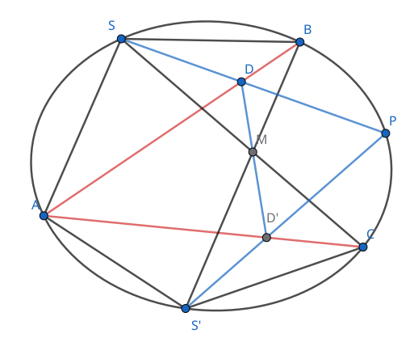
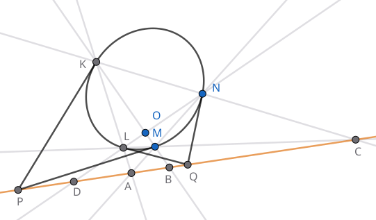

[Lehmer D.《An elementary course in synthetic projective geometry》]
射影平面 `P(RR^2)` 比欧氏平面 `RR^2` 多了无穷远点和无穷远直线的概念.
在 `RR^2` 上任取直线 `l` 和直线外一点 `P`, 考虑过 `P` 点的全体直线组成的线束. 任取 `Q in l`, 则点 `Q` 完全决定了线束中的一条直线 `PQ`. 然而线束中有一条直线在 `l` 上找不到对应的点, 那就是 `l` 的平行线. 为弥补这个缺憾, 我们规定这条直线与 `l` 上的无穷远点对应, 从而在直线 `l` 与线束 `P` 之间建立了双射, 这个双射就称为直线与线束间的透视对应 (perspective correspondence), 我们称这样的直线与线束是相互透视的.
注意, 要使双射成立, 我们引入的直线 `l` 的无穷远点必须唯一, 即不论向直线的哪个方向走到「尽头」, 最终都会到达同一个无穷远点. 为 `RR^2` 上的每条直线都引入一个无穷远点, 最后, 再规定所有这些无穷远点组成一条无穷远直线. 这样一来, 我们可以说, 射影平面上任意两条不同直线有唯一的交点; 特别地, 两条平行直线相交于无穷远点, 直线与无穷远直线的交点是它的无穷远点. 反之, 正因为直线与无穷远直线交于无穷远点, 从而无穷远直线可以视为与任意其它直线平行.
再看射影空间 `P(RR^3)`. 我们为 `RR^3` 的每条直线都引入一个无穷远点, 这些无穷远点全体组成一个无穷远平面. 无穷远平面和另一个平面的交点组成后者的无穷远直线. 于是, `P(RR^3)` 中任意两个不同平面有唯一的交线; 特别地, 两平行平面相交于无穷远直线. `P(RR^3)` 中直线与平面有唯一的交点; 当直线与平面平行时, 它们相交于直线的无穷远点. `P(RR^3)` 中两条不同直线有 0 或 1 个交点; 两平行直线相交于无穷远点, 两异面直线的无穷远点不相同, 因而没有交点.
本章今后只讨论射影平面 `P(RR^2)`.
我们专门讨论 `P(RR^2)` 的四种可视化.
在 `RR^3` 中, 将 `xOy` 平面上一点 `P(x, y, 0)` 抬升到 `P_1(x, y, 1)`, 它唯一确定了空间线束 `O` (即, 通过原点的全体直线) 中的一条直线 `l = OP_1`:
`RR^2 to 线束 O`
`(x, y) mapsto l: OP_1`.
与平面上的无穷远点对应的, 是线束 `O` 中位于平面 `xOy` 上的那些直线, 这些直线与平面 `z = 1` 平行, 无法用刚才的几何方法得到.
在线束模型中, 线束 `O` 代表射影空间 `P(RR^2)`, 线束 `O` 中的一条直线代表 `P(RR^2)` 中的一点.
在线束模型中, 取线束 `O` 中直线 `l` 与单位球面 `S^1` 的交点 `A_1, B_1`, 得到映射
`RR^2 to S^1`
`(x, y) mapsto +-(x, y, 1) // sqrt(x^2 + y^2 + 1)`.
每条直线与 `S^1` 有两个交点, 它们位于一条直径的两端, 称为一组对径点.
我们把这两点等同起来, 代表射影空间 `P(RR^2)` 中的同一点.
与无穷远点对应的, 是 `S^1` 赤道 (即它与 `xOy` 平面相交的部分, 平面 `xOy` 上的单位圆) 上的点,
在球面模型中, 单位球面上的全体对径点代表射影空间 `P(RR^2)`, 每组对径点代表 `P(RR^2)` 中的一点.
在球面模型中, 我们只取对径点 `A_1, B_1` 中 `z ge 0` 的那一个 (`A_1`), 得到映射
`RR^2 to S^1_(z ge 0)`
`(x, y) mapsto (x, y, 1) // sqrt(x^2 + y^2 + 1)`.
这样除了赤道外, `RR^2` 中的点与上半球面的点一一对应. 而赤道上和球面模型相同:
每组对径点对应一个无穷远点.
把半球模型「拍平」到单位圆盘 `D^2` 中, 得到映射
`RR^2 to D^2`
`(x, y) mapsto (x, y) // sqrt(x^2 + y^2 + 1)`.
`RR^2` 中的点与 `D^2` 的内点一一对应. 而 `D^2` 边界上的每组对径点对应一个无穷远点.
本节对射影平面的四种可视化仅用于说明定义的合理性, 并帮助理解射影平面的结构. 在以下的叙述与插图中, 为直观起见, 我们通常仍使用 `RR^2` 的视角来描绘射影平面, 并想象它在无穷远处有一条直线.
对偶原理 (law of duality)
射影几何研究的是点和直线的关联关系, 即点在直线上的关系.
在射影平面中, 点和直线是对偶的概念. 例如,
"两点确定一条直线" 的对偶是 "两直线确定一个交点",
"点列" (直线上的所有点) 的对偶是 "线束" (通过一点的所有直线).
所有射影概念 (仅用点和直线的关联关系描述的概念) 都有其对偶概念,
所有仅涉及射影概念的命题都有其对偶命题, 且原命题成立时, 对偶命题自动成立.
这是因为我们可以对原命题的证明作逐字替换, 把射影概念换成对偶概念, 从而得到对偶命题的证明.
射影对应 (projective correspondence) 是有限个透视对应的复合. 比如有 `n` 个基本形 `S_1, cdots, S_n`, 其中 `S_1` 与 `S_2` 透视, `S_2` 与 `S_3` 透视..., 那么所有这些基本形都是相互射影的. 由于每一种透视对应都是连续双射, 射影对应显然也是连续双射, 且射影对应的复合、射影对应的逆映射都是射影对应.
有限步直尺作图确定的射影对应 从点列中的一点 (或线束中的一条直线) 出发, 仅用有限步直尺作图 (即, 只允许连接两点得到直线, 或取两直线交点) 最终得到点列中的一点 (或线束中的一条直线), 通过这种方式确定的对应是射影对应.
Desargues (笛沙格) 定理 对两个三角形 `ABC` 和 `A'B'C'`, 设 `A B nn A'B' = P`, `B C nn B'C' = Q`, `C A nn C'A' = R`, 则有 `A A'`, `B B'`, `C C'` 三线共点 `iff` `P, Q, R` 三点共线.

定理对无穷远点或无穷远直线也成立. 例如 `A A', B B', C C'` 三直线平行时, 它们的交点为无穷远点. 或者 `BC || B'C'` 时, `Q` 为无穷远点. 特别当 `AB || A'B'`, `BC || B'C'`, `CA || C'A'` 时, `P, Q, R` 均为无穷远点, 它们仍是共线的 (无穷远直线).
直尺作图: 远处的交点 平面上有两直线 `l, l'` 在远处相交于点 `M`. 给定另一点 `A`, 在不延长 `l, l'` 的情况下, 仅用直尺作图, 画出直线 `AM`. 特别当 `l, l'` 平行时, 我们得到过 `A` 点的平行线.
参考 Desargues 定理插图. 在直线 `l` 上任取 `B, B'`, 在 `l'` 上任取 `C, C'`, 设 `BC nn B'C' = Q`. 任取 `P in AB`, 设 `PQ nn AC = R`, `RC' nn PB' = A'`. 由 `P, Q, R` 三点共线知, `A A', B B', C C'` 三线共点, 所以 `A A'` 即为所求的直线.
简化的作图法. 过 `A` 点任意作两直线 `BP`, `CR`, 其中 `B, R in l`, `C, P in l'`. 设 `BC nn PR = Q`. 过 `Q` 作直线 `B'C'`, 其中 `B' in l`, `C' in l'`. 记 `RC' nn PB' = A'`, 则 `A A'` 为所求的直线.
完全四边形 在平面上, 连接四边形的两条对角线, 这两条直线连同原来的四条边一共 6 条直线, 组成的图形称为完全四边形. 或者, 将平面上四点两两连接得到的图形就叫做完全四边形. 完全四边形共有三组对边: 除了原四边形的两组对边外, 我们把两条对角线也看作一组对边.

定理表明, 在直线上任取 `A, B, C` 三点, 可以作出一点 `D`, 其位置完全由 `A, B, C` 的位置决定. 注意到 `A, C` 两点地位对等, `B, D` 两点地位对等, 我们称 `B, D` 关于 `A, C` 调和共轭, 或者称线段 `BD` 调和分割线段 `AC`. 当点的次序不至于引起混淆时, 我们也笼统地说 "`A, B, C, D` 为四调和点".

调和共轭的对称性 若 `BD` 调和分割 `AC`, 则 `AC` 也调和分割 `BD`.

设 `BD` 调和分割 `AC`, 相应的完全四边形是 `KLMN`. 记对边 `KM`, `LN` 的交点为 `O`, 连接 `AO`, `CO`, 这两条直线把四边形 `KLMN` 分为四个四边形. 我们看其中的一个 `KPOQ`, 它的一组对边 `PK`, `OQ` 通过点 `A`, 另一组对边 `PO`, `KQ` 通过点 `C`, 又 `KO` 通过点 `D`, 于是由 `BD` 调和分割 `AC` 知, `PQ` 过点 `B`. 考察其它三个小四边形, 同理得 `SR` 过点 `B`, `PS`, `QR` 过点 `D`. 现在, 完全四边形 `PQRS` 的一组对边过点 `B`, 另一组对边过点 `D`, 其剩下的一组对边分别过 `A, C`. 这说明 `AC` 调和分割 `BD`.
四调和点的射影不变性
设直线 `l` 上 `BD` 调和分割 `AC`. 将 `l` 射影对应到直线 `l'`,
相应有 `B'D'` 调和分割 `A'C'`.

设 `BD` 调和分割 `AC`, 相应的完全四边形为 `KLMN`. 任取平面上一点 `S` 与直线 `l'`,
将 `SA, SB, SC, SD` 与 `l'` 的交点记为 `A', B', C', D'`.
下证它们是四调和点.
事实上, 使用升维法, 将 `S` 视为平面 `KLMN` 外的空间中一点,
它与平面上的 7 条直线 (完全四边形 `KLMN` 的 3 组对边, 以及直线 `l`) 形成 7 个平面.
例如, `S` 与直线 `l` 形成平面 `SAD`.
现在, 直线 `l'` 可以看作空间中另一平面 `p` 与平面 `SAD` 的交线.
平面 `p` 与其余 6 个平面相交, 在空间中形成新的完全四边形 `K'L'M'N'`.
点 `A', B', C', D'` 正是关于完全四边形 `K'L'M'N'` 的四调和点.
最后将 `K'L'M'N'` 以及 `A', B', C', D'` 投影回原来的平面, 虽然位置改变, 但四调和点的关系不变.
众所周知不变量是几何学的灵魂. 四调和点就是第一个重要的射影不变量.
由射影不变性知道, 四调和线被不通过线束中心的任意直线所截, 必得到四调和点. 此外还有

小结: 调和元素 (指四调和点、四调和线、四调和平面) 在射影对应下仍保持调和性质.
考虑紧化复平面 `CC uu {oo}` 上的四点 `A, B, C, D`, 规定 `oo//oo = 1`, 又用 `AB := B-A` 表示有向线段. 分别将点 `C, D` 视为线段 `AB` 的定比分点, 相应的比例为 `AC//BC`, `AD//BD`. 线段 `AB` 与 `CD` 的交比 (cross ratio) 定义为这两个比例的比: `(AB, CD) = (AC//BC)/(AD//BD)`. 易知 `(AB, CD) = (CD, AB)`, 因此 `AB` 与 `CD` 的地位对称.
交比记忆: 左 `A` 右 `B`, 上 `C` 下 `D`.
交比为实数当且仅当四点共圆或共线.
由已知 `(AB, CD) in RR` `iff "arg"(AC//BC)/(AD//BD) = k pi` `iff /_BCA - /_BDA = k pi`. 若 `/_BCA`, `/_BDA` 都是 `pi` 的整数倍, 显然四点共线. 否则设 `/_BDA = theta`. 若 `k = 0`, 有 `/_BCA = /_BDA = theta`, 由圆周角定理知四点共圆. 若 `k = 1`, 有 `/_BCA = theta + pi`, `/_ACB = 2pi - /_BCA = pi - theta`, 于是 `/_ACB` 与 `/_BDA` 互补, 从而四点共圆.
`(AB, CD) = -1` `iff AC * BD = AD * CB`.
计算 `(AB, CD) = -1` `iff AC//BC + AD//BD = 0` `overset"通分"iff AC * BD + AD * BC = 0`. 然后注意 `BC = -CB` 即可.
取单位圆上的四点 `A = 1`, `B = -1`, `C = "i"`, `D = -"i"`, 则 `(AB, CD)` `= (("i"-1)//("i"+1))/((-"i"-1)//(-"i"+1))` `= "i"//(-"i")` `= -1`.
四调和点
设 `A, B, C, D` 四点共线且交比 `(AB, CD) = -1`, 由于 `AB`, `CD` 两线段的地位对称,
我们称 `AB` 调和分割 `CD`, `CD` 调和分割 `AB`, 或 `AB, CD` 调和共轭.
位置关系上, `C, D` 恰有一点位于 `A, B` 之间, 于是只有四种可能:
`A —— C —— B —— D`,
`A —— D —— B —— C`,
`D —— A —— C —— B`,
`C —— A —— D —— B`.
于是等式 `AC * BD = AD * CB` 可以记忆为:
第一段 * 第三段 = 第二段 * 整段.
注意区分调和平均与几何平均: 比如线段 `AB` 的阿氏圆 `O` 交 `AB` 于 `P`, 则 `A, B` 关于圆 `O` 互为反演, `OP^2 = OA * OB`. 这意味着 `OP` 是 `OA, OB` 的几何平均.
对偶完全四边形 上文的完全四边形是从四个点出发定义的, 又叫四点形. 我们也可以从四条直线出发, 考虑平面四边形 `RAQO`, 延长四边所在的直线, 一共交于 6 个点. 这样的图形称为对偶完全四边形, 又叫四线形. 6 个点中, 只有 3 对点 `AO`, `RQ`, `BC` 未被直线连接, 称为对偶完全四边形的 3 条对角线. 完全四边形及其对偶比较如下:
| 完全四边形 | 对偶完全四边形 |
|---|---|
| 4 个点 | 4 条直线 |
| 6 条直线 | 6 个交点 |
| 3 组对边 | 3 组对应点 (即 3 条对角线) |
下面的定理表明, 四调和点的两种定义等价:
对偶完全四边形的每条对角线被另外两条对角线调和分割.
如图, 在交比的意义下, `BC, PT` 调和共轭, `AO, SP` 调和共轭, `RQ, ST` 调和共轭.

在 `triangle ABC` 中使用 Menelaus 定理得 `(BT)/(TC) (CQ)/(QA) (AR)/(RB) = -1`, 使用 Ceva 定理得 `(BP)/(PC) (CQ)/(QA) (AR)/(RB) = 1`. 两式相除得到 `(BT//TC)/(BP//PC) = -1`, 即 `BC, PT` 调和共轭. 类似地, 在 `triangle AOB` 中和 `triangle ARQ` 中可证明后两个结论.
设直线上依次有 `A, C, B, D` 四点, 则 `AB, CD` 调和共轭 `iff` 平面上存在一点 `O`, 使 `OC` 平分 `/_AOB`, 且 `OD` 平分 `/_AOB` 的补角.
 设 `OC` 平分 `/_AOB`, 且 `OD` 平分 `/_AOB` 的补角, 于是 `OC _|_ OD`.
过 `A` 作直线 `AD' _|_ OB`, 记 `AD'` 分别与 `OB, OC, OD` 交于点 `B', C', D'`.
现在记 `/_ B'OC' = alpha`, `AC' = x`, `C'B' = 1`, `B'D' = y`,
因此 `OB' = sqrt y`, `tan alpha = 1//sqrt y`,
`tan 2 alpha = tan /_AOB' = (x+1)//sqrt y`.
另一方面, 利用二倍角公式
`tan 2 alpha = (2//sqrt y)/(1-1//y)`.
化简得 `x y = x + y + 1`, 因此 `AB', C'D'` 调和共轭.
由射影不变性知道 `AB, CD` 也调和共轭.
反向的结论用同一法即可.
设 `OC` 平分 `/_AOB`, 且 `OD` 平分 `/_AOB` 的补角, 于是 `OC _|_ OD`.
过 `A` 作直线 `AD' _|_ OB`, 记 `AD'` 分别与 `OB, OC, OD` 交于点 `B', C', D'`.
现在记 `/_ B'OC' = alpha`, `AC' = x`, `C'B' = 1`, `B'D' = y`,
因此 `OB' = sqrt y`, `tan alpha = 1//sqrt y`,
`tan 2 alpha = tan /_AOB' = (x+1)//sqrt y`.
另一方面, 利用二倍角公式
`tan 2 alpha = (2//sqrt y)/(1-1//y)`.
化简得 `x y = x + y + 1`, 因此 `AB', C'D'` 调和共轭.
由射影不变性知道 `AB, CD` 也调和共轭.
反向的结论用同一法即可.
交比是射影不变量 设 `l` 上依次有 `A, C, B, D` 四点, 将 `l` 射影对应到 `l'`, 四点的交比不变, 即 `(AB, CD) = (A'B',C'D')`.
取直线 `l` 外一点 `O`, 应用正弦定理将线段比转化为角度的正弦比: `(AC)/(sin /_AOC) = (OA)/(sin /_ACO)`, `quad (CB)/(sin /_BOC) = (OB)/(sin (pi - /_ACO))`, 因此 `(AC)/(CB) = (OA * sin /_AOC)/(OB * sin /_BOC)`. 同理 `(AD)/(DB) = -(OA * sin /_AOD)/(OB * sin /_BOD)`. 两式相除可知, 交比由线束之间夹角唯一确定, 与截线的选取无关.
在计算机视觉中, 应用交比的射影不变性, 可以进行摄像机标定.
回忆定义: 射影对应是若干透视对应的复合. 先考虑点列之间的射影对应, 我们要问: 至多需要几个点, 可以完全确定两个点列间的射影对应? 设这两个点列为 `l, l'`, 任取两个射影对应 `f, g: l to l'`. 注意 `f, g` 都是双射, 因此对任意 `P in l`, `f(P) = g(P)` 当且仅当 `(g^-1 @ f)(P) = P`, 即 `P` 为 `l` 到自身的射影对应 `g^-1 @ f` 的一个不动点. 于是问题的另一种提法为: 至多需要几个不动点, 可以使点列到自身的射影对应成为恒等映射?
点列与自身的一个射影对应 在平面中, 设 `S_1, S_2` 是两个透视对应的线束, 透视轴为 `u`. 考虑另一条直线 `l`, 分别建立透视对应 `l to S_1` 和 `S_2 to l`. 从而 `l` 与自身建立了射影对应, 记为 `f`. 容易验证, `l` 与 `u` 的交点, 以及 `l` 与直线 `S_1 S_2` 的交点, 是映射 `f` 的两个不动点 (当两点重合时 `f` 只有一个不动点).
提示: 选取一点 `P in l`, 将它打到 `S_1`, 再经过 `u` 打到 `S_2`, 最后打回 `l` 上.
射影对应基本定理 如果直线 `l` 到自身的射影对应 `f` 有三个不动点, 那么 `f` 为恒等映射.
上述定理中的直线换成线束或平面束也是对的. 这是因为可以用一条直线去截取线束或平面束, 从而转化为直线到自身的射影对应. 同样地, 下面几个命题中的直线也都可以换成线束与平面束, 不再赘述.
若 `l, l'` 是两个点列, 任给 `A, B, C in l` 和 `A', B', C' in l'`,
则两个点列间存在唯一的射影对应, 分别将 `A, B, C` 对应到 `A', B', C'`.
特别当 `l, l'` 的交点对应到自己时, 两个点列实际处于透视对应.
熟知调和元素在射影对应下仍变为调和元素, 这个性质反过来也对, 这就是:
如果一个连续双射使四调和点变为四调和点, 那么它一定是射影对应.
任取直线 `l` 上的四调和点 `A, B, C, D`, 设它对应到直线 `l'` 上的四调和点 `A', B', C', D'`, 下证这个对应 `f` 为射影对应. 事实上, 由前一个推论, 存在唯一的射影对应 `g`, 使得三点 `A, B, C` 分别对应于 `A', B', C'`. 下证 `f = g`, 这只需说明 `g^-1 @ f` 为恒等映射. 这里的 `g^-1 @ f` 是连续双射, 满足将任意四调和点变为四调和点, 且有三个不动点 `A, B, C`. 根据射影对应基本定理的证明, `g^-1 @ f` 为恒等映射.
小结: 点列到自身的射影对应, 其不动点的数量可以是 0, 1, 2. 如果有 3 个不动点, 则这个射影对应是恒等映射.
我们已经知道, 两个相互透视的线束, 其公共点的轨迹是两直线 (一条是透视轴, 另一条是两线束的重合直线). 如果两个线束相互射影, 但不相互透视, 则轨迹与平面上任意直线 `l` 至多有两个交点 (若它有三个交点, 则两线束与直线 `l` 的射影对应已经完全确定, 即以 `l` 为透视轴的透视对应). 因此我们称它为二阶点列, 又叫圆锥曲线.
五点确定一条圆锥曲线
若 `S, S'` 是两个线束, 任给 `a, b, c in S` 和 `a', b', c' in S'`, 则两个线束间存在唯一的射影对应,
分别将 `a, b, c` 对应到 `a', b', c'`.

我们记 `a nn a' = A`, `b nn b' = B`, `c nn c' = C`,
然后记 `AB = l`, `AC = l'`.
分别将直线 `l, l'` 透视对应到线束 `S, S'`, 这样就建立了两直线的射影对应.
但 `l, l'` 还有一个公共点 `A` 对应到自己, 所以它们实际处于透视对应.
而 `SC, S'B` 正好连接了另外两组对应点, 所以 `M = SC nn S'B` 就是透视中心.
`l, l'` 共有 3 组对应点, 所以它们之间的射影对应是唯一的, 进而线束 `S, S'` 之间的射影对应也是唯一的.
现在任给直线 `d in S`, 我们寻找对应的 `d' in S'` 如下:
作出 `d nn l = D`, 然后 `DM nn l' = D'`, 最后 `S'D' = d'`.
记 `d nn d' = P`, 让 `d` 绕 `S` 转动, 在这过程中, 点 `P` 的轨迹是一圆锥曲线.
圆锥曲线的调和性质 如果圆锥曲线 `c` 上四点 `A_1, A_2, A_3, A_4` 连接到曲线上第五点 `S` 是调和线束, 则这四点连接到曲线上任一点 `S'` 也是调和线束. 我们称这四点是圆锥曲线 `c` 上的四调和点.
参考“五点确定一条圆锥曲线”的插图, 以 `S` 为心画四调和线 `SA_i`, `i = 1, 2, 3, 4`. 由于 `P` 是圆锥曲线上任一点, 我们可以想像 `A_i` 与 `P` 重合. 设 `SA_i` 与 `AB` 的交点是 `D_i`, 然后以 `M` 为透视中心, 将 `D_i` 四点对应到 `AC` 上, 得到 `D_i'`. 于是 `S'A_i = S'D_i'` 为四调和线.
当圆锥曲线为圆时, 由于线束间的夹角为圆周角, 不随线束中心位置的变化而改变, 所以线束保持调和. 在一般的圆锥曲线上, 线束的夹角未必是定值. 但可以在空间中找到一个透视中心 `O`, 建立圆锥曲线与圆的透视对应. 在透视对应下线束保持调和, 所以结论成立.
Pascal 定理
平面六边形的三组对边交点共线, 当且仅当它的六个顶点位于一条圆锥曲线上.
设平面上有 `1, 2, 3, 4, 5, 6` 六个点, 其中任意三点不共线.
又设 `12 nn 45 = X`, `23 nn 56 = Y`, `34 nn 61 = Z`, 则
`1, 2, 3, 4, 5, 6` 共圆锥曲线
`iff X, Y, Z` 三点共线.
注意 `X, Y, Z` 三点中可以有无穷远点, 即六边形的三组对边可以是平行的.
二阶线束 是二阶点列的对偶概念, 它是指两条射影相关 (但不透视相关) 的直线 `l, l'` 的全体对应点连线的集合. 对平面上任一点 `P`, 二阶线束中至多有两条直线通过它. 事实上若有三条直线通过它, 则 `l, l'` 关于 `P` 透视对应.
圆锥曲线的全体切线构成二阶线束, 反之二阶线束的包络是圆锥曲线.
在二阶点列的理论中, 将点线的概念互换, 就平行得到了二阶线束的各种结论. 我们不再详细证明:
五条直线确定一个二阶线束 已知直线 `l, l', a, b, c`, 则 `a, b, c` 给出了 `l, l'` 间的三组对应点, 从而确定了 `l, l'` 间的射影对应. `l, l'` 全体对应点的连线形成二阶线束. 从五条直线中另取两条作为生成元, 也能得到同一个二阶线束.
记 `a, b, c` 分别与 `l` 交于 `A, B, C`, 与 `l'` 交于 `A', B', C'`.
记 `S = A A' nn B B'`, `S' = A A' nn C C'`,
将线束 `S` 透视对应到 `l`, `S'` 透视对应到 `l'`.
由于 `S S'` 是对应直线, 两线束实际上处于透视对应.
注意到点 `C` 和 `B'` 均为两线束对应直线的交点, 所以直线 `m = CB'` 就是它们的透视轴.
确定透视轴后, 按如下步骤确定对应点:
任给 `D in l`, 作 `SD nn m = P`, `S'P nn l' = D'`, 则 `D'` 就是 `D` 在 `l'` 上的对应点.
Brianchon 定理 平面六边形的三组对顶点的连线交于一点, 当且仅当它是某条圆锥曲线的外切六边形. 设平面上有 `1, 2, 3, 4, 5, 6` 六直线, 其中任意三直线不交于一点. 又设三直线 `l = (12, 45)`, `m = (23, 56)`, `n = (34, 61)`, 则 `1, 2, 3, 4, 5, 6` 是某圆锥曲线的六条切线 `iff l, m, n` 三直线交于一点.
极点与极线
过平面上一点 `O` 作两直线 `KM, LN` 交圆锥曲线 `c` 于 `KLMN` 四点.
考查完全四边形 `KLMN`, 设对边 `KL nn MN = A`, `LM nn NK = C`.
则直线 `l = AC` 由点 `O` 和圆锥曲线 `c` 完全决定, 和直线 `LM, LN` 的取法无关.
我们称 `l` 是 `O` 关于圆锥曲线 `c` 的极线 (polar), `O` 是 `l` 关于 `c` 的极点 (pole).

自配极三角形
设 `P` 在直线 `q` 上, 则 `q` 的极点 `Q` 在 `P` 的极线 `p` 上.
又记 `R = p nn q`, 则 `R` 的极线就是 `PQ`.
三角形 `PQR` 的每个顶点都以对边为极线, 称为自配极三角形.
参考极点与极线的插图, `BOP`, `DOQ`, `AOC` 都是自配极三角形.
显然 `BO` 是 `P` 的极线, `DO` 是 `Q` 的极线. 下证 `CO` 是 `A` 的极线, 设 `CO nn AN = S`, 以 `C` 为透视中心, 四调和点 `B, O, M, K` 被映为 `A, S, M, N`, 于是 `S` 在 `A` 的极线上. 但 `O` 也在 `A` 的极线上, 故 `CO = SO` 就是 `A` 的极线.
点 `P` 在 `q` 上时, 点 `Q` 也在 `p` 上, 因此 `P` 沿 `q` 运动时, `p` 绕 `Q` 旋转. 点列与线束的射影对应可以这样确定: 参考极点与极线的插图, `A` 的极线是 `OC`. 固定弦 `LN`, 则下式给出 `A` 到 `OC` 的射影对应: `A overset L mapsto K` `overset N mapsto C` `mapsto OC`.
[百度百科]
用齐次坐标证明 `Q` 的轨迹为直线.
设 `P = (p_1, p_2, p_3)^(sf T)`, `Q = (q_1, q_2, q_3)^(sf T)`,
则 `l_(P Q)` 上任意一点坐标为 `Q + k P` (`k = oo` 时, `Q + k P = P`).
将 `Q + k P` 代入 `c` 的方程 `x^(sf T) A x = 0`
(`x in RR^3`, `A` 是三阶实对称矩阵) 得
`(Q + k P)^(sf T) A (Q + k P) = 0`,
`k^2 P^(sf T) A P + 2 k (P^(sf T) A Q) + Q^(sf T) A Q = 0`.
设 `M = Q + m P`, `N = Q + n P`. 则 `m, n` 是上面关于 `k` 的二次方程的两根.
由于 `PQ, MN` 调和共轭, 有
`-1 = (PQ, MN) = (PM//MQ)/(PN//NQ)`
`= ((m-oo)//(0-m))/((n-oo)//(0-n))`
`= n / m`.
于是 `m + n = 0`, 由韦达定理有 `P^(sf T) A Q = 0`, 即 `Q` 的轨迹是直线.
椭圆外一点的极线恰好是过该点的两切线确定的切点弦. 用解析的语言, 椭圆 `x^2/a^2 + y^2/b^2 = 1` 外一点 `P(x_0, y_0)` 的极线方程是椭圆方程的半代入: `(x_0 x)/a^2 + (y_0 y)/b^2 = 1`.
利用共轭直径推导圆锥曲线的方程.
称直线到自身的射影对应 `f` 为对合 (involution), 如果 `f @ f = "id"`, 即 `f = f^-1`. 对合映射下的对应点又叫对合点, 满足 `f(A) = A'`, `f(A') = A`, 记作 `A harr A'`.
对合的判定 如果直线到自身的射影对应 `f` 有一组对合点, 则所有的对应点都是对合点, 即 `f` 是直线到自身的对合.
 假设 `f` 将直线上的 `A, B, C` 分别映为 `D, C, B`,
则 `B harr C` 是一组对合点, `f` 由这三组对应点完全确定.
下证 `f(D) = A`.
从交比来看, 显然 `(AB, CD) = (DC, BA)`, 因此结论成立.
也可以用射影方法证明如下:
`(A, B, C, D)`
`overset O to`
`(A', B', C', D')`
`overset S to`
`(A', E, O, A)`
`overset (B') to`
`(D', S, F, A)`
`overset O to`
`(D, C, B, A)`.
这构造出了一个射影对应, 将 `A, B, C, D` 映为 `D, C, B, A`, 因此这个对应就是 `f`,
且 `f(D) = A`.
假设 `f` 将直线上的 `A, B, C` 分别映为 `D, C, B`,
则 `B harr C` 是一组对合点, `f` 由这三组对应点完全确定.
下证 `f(D) = A`.
从交比来看, 显然 `(AB, CD) = (DC, BA)`, 因此结论成立.
也可以用射影方法证明如下:
`(A, B, C, D)`
`overset O to`
`(A', B', C', D')`
`overset S to`
`(A', E, O, A)`
`overset (B') to`
`(D', S, F, A)`
`overset O to`
`(D, C, B, A)`.
这构造出了一个射影对应, 将 `A, B, C, D` 映为 `D, C, B, A`, 因此这个对应就是 `f`,
且 `f(D) = A`.
在四调和点一节, 我们曾经研究完全四边形与直线有四个交点的特殊情形. 本节我们要研究六个交点的一般情形.
完全四边形确定的对合
设平面上完全四边形 `KLMN` 的三组对边
`KL, MN, KN, LM, LN, KM` 与一直线 `l` 分别交于 `A, A', B, B', C, C'` 六点.
固定前四点, 则 `C'` 的位置完全由 `C` 点决定, 而与完全四边形的形状无关.

假设另有一个完全四边形 `K'L'M'N'` (未画出) 的对应边也经过 `A, A', B, B', C` 五点, 下证 `K'M'` 经过 `C'`. 对三角形 `KLN` 和 `K'L'N'` 应用 Desargues 定理, 它们的三边交点 `A, B, C` 共线, 所以对应点连线 `K K', L L', N N'` 共点. 再对三角形 `LMN` 和 `L'M'N'` 作同样讨论, 得到 `L L', M M', N N'` 共点. 因此, `K K', L L', M M'` 三线共点. 对三角形 `KLM` 与 `K'L'M'` 应用 Desargues 逆定理, 得到它们三边的交点 `A, B', KM nn K'M'` 共线. 因此 `K'M'` 也经过 `C'`.
对合点的作法 如上图, 设 `f` 是直线 `l` 到自身的对合, `A harr A'`, `B harr B'` 是两组对合点. 对任意 `C in l`, 可以这样得到对合点 `C'`: 从前四点中任取三点, 例如取 `A, A', B'`, 分别过它们作三直线 `a, a', b'`, 得到两交点 `L = a nn b'`, `M = a' nn b'`. 固定 `L, M` 两点, 作 `N = CL nn A'M`, `K = BN nn AL`, 于是 `C' = KM nn l`.
建立直线 `l` 到自身的射影对应 `g`: `C overset L mapsto N` `overset B mapsto K` `overset M mapsto C'`. 从图形容易看出 `C, C'` 的地位是对称的, 因此 `C overset g harr C'`, 又因为完全四边形的三组对边地位对称, 我们还有 `A overset g harr A'`, `B overset g harr B'`. 因此 `f = g`, `C overset f harr C'`.
圆锥曲线的共轭点确定的对合 任给直线 `l` 到自身的对合, 则存在唯一的圆锥曲线 `c`, 使得任意一组对合点 `B, B'` 关于 `c` 共轭. 换言之, `B, B'` 分别落在对方的极线上. 反之给定圆锥曲线 `c` 和直线 `l`, 只要它们不相切, 直线 `l` 到自身的对合也完全确定.
图形同上, 先根据给定的对合构造完全四边形,
然后将固定两点 `L, M` 视为线束中心, 记 `LC nn MC' = P`, 则 `P` 的轨迹是圆锥曲线.
考虑线束中心连线 `LM`, 它对应着 `L, M` 两点处的切线, 于是
`LB'` 的对应直线 `MB` 是 `M` 处的切线, `MB'` 的对应直线 `LB` 是 `L` 处的切线.
这推出 `LM` 是 `B` 的极线, 它正好通过 `B'` 点,
因此 `B, B'` 是一对共轭点.
反之给定一条圆锥曲线 `c` 和直线 `l`,
如果它们不相切, 任取 `l` 上关于 `c` 的两对共轭点 `A, A', B, B'`.
根据极点极线的结论, 共轭点之间的对应是射影对应,
因此这四点完全确定了直线 `l` 到自身的对合.
如果圆锥曲线与直线相切, 直线上的所有点都与切点共轭, 从而不是双射, 无法确定直线上的对合.
直线到自身的对合只能有 0 或 2 个不动点. 当它有两个不动点时, 这两点调和分割任一组对合点.
根据直线上的对合与圆锥曲线的关系, 对合的不动点就是直线与圆锥曲线的交点, 由于直线不能与圆锥曲线相切, 交点只能有 0 或 2 个. 当有两个交点 `S, S'` 时, 任一组对合点 (即关于圆锥曲线的共轭点) 都与 `S, S'` 调和共轭.
Desargues 对合定理 通过平面上四点的圆锥曲线族, 与平面上任一直线相交形成对合点列.
对偶地, 可以定义线束的对合为线束到自身的射影对应 `f`, 且 `f @ f = "id"`.
给定圆锥曲线 `c` 和不在曲线上的一点 `S`, 则 `c` 唯一确定了线束 `S` 到自身的对合:
那就是将直线映为共轭直线.
这个对合下的不动直线就是 `S` 到 `c` 的两条切线 (如果存在).
对合是射影性质, 因此在射影对应下, 对合的点列仍被映为对合线束或点列.
还可以定义二阶点列的对合, 有如下结论:
如果圆锥曲线上叠加了两个射影相关的二阶点列, 且对应 `f` 为对合映射, 则称它们是两个对合二阶点列. 对合二阶点列的对应点连线通过固定点 `U`. 任取对应点 `A harr A'` 和 `B harr B'`, 则连线 `AB` 和 `A'B'` 的交点在 `u` 的极线上.
取 `A, A'` 为两个线束中心, 则公共边 `A A'` 是对应直线, 两线束处于透视位置. 因此对应直线交点 `P = AB' nn A'B`, `Q = AB nn A'B'` 都落在透视轴 `u` 上. 下证 `A A'` 通过 `u` 的极点 `U`, 只需证 `A A'` 的极点 `R` 在 `u` 上. 作 `A, A'` 处的切线交于点 `R`, 对内接四边形 `A B' A' B` 应用 Pascal 定理知 `P, Q, R` 三点共线, 因此 `R in u`.
考虑直线到自身的对合, 我们称无穷远点的对合点为对合的中心. 如果对合存在不动点 `S, S'`, 则中心与无穷远点调和分割线段 `S S'`, 因此中心就是 `S S'` 的中点.
对合的度量定义 称直线 `l` 到自身的映射是对合, 如果存在一点 `O in l`, 使得任一组对应点 `A harr A'` 有 `OA * OA' =` 非零常数. 点 `O` 就称为对合的中心.
取两组对合点 `A harr A'`, `B harr B'`, 先用完全四边形构造出对合的中心: 具体做法是固定 `L, M` 两点, 过 `M` 作 `KM || l` 交 `AL` 于 `K`, 然后 `N = BK nn A'M`, `P = LN nn MK`, `O = LN nn l`. 由平行线立即得到相似三角形 `LKP ~ LAO`, `NMP ~ NA'O`, 因此 `(OA)/(PK) = (OL)/(PL)`, `quad (OA')/(PM) = (ON)/(PN)`. 类似 `(OB')/(PM) = (OL)/(PL)`, `quad (OB)/(PK) = (ON)/(PN)`. 于是 `OA * OA' = OB * OB'`.
对合点的作法 (通过作圆)
任给直线 `l` 上两组对合点 `A harr A'`, `B harr B'`,
通过 `A, A'` 两点任作一圆, 再通过 `B, B'` 两点作一圆, 使两圆相交于 `G, G'` 两点.
作 `O = G G' nn l`. 根据圆幂定理
`OA * OA'`
`= OG * OG'`
`= OB * OB'`,
因此 `O` 就是对合中心.
对任意 `C in l`, 过 `G, G', C` 三点作圆, 交直线 `l` 于另一点 `C'`, 则 `C harr C'`.
最后, 如果 `G, G'` 在直线 `l` 同侧, 可以过这两点作两个圆与直线 `l` 相切, 得到对合的两个不动点.
圆是特殊的圆锥曲线, 它与无穷远直线有两个虚交点, 再加上 `G, G'`, 正是通过四点的圆锥曲线系, 因此这个作图法是 Desargues 对合定理的特例.